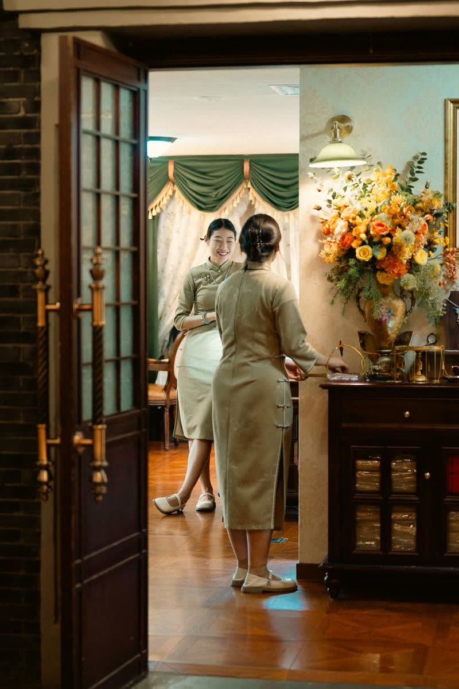
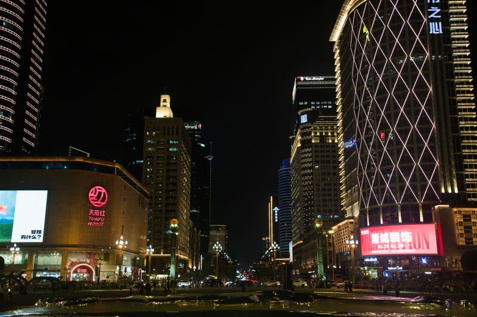
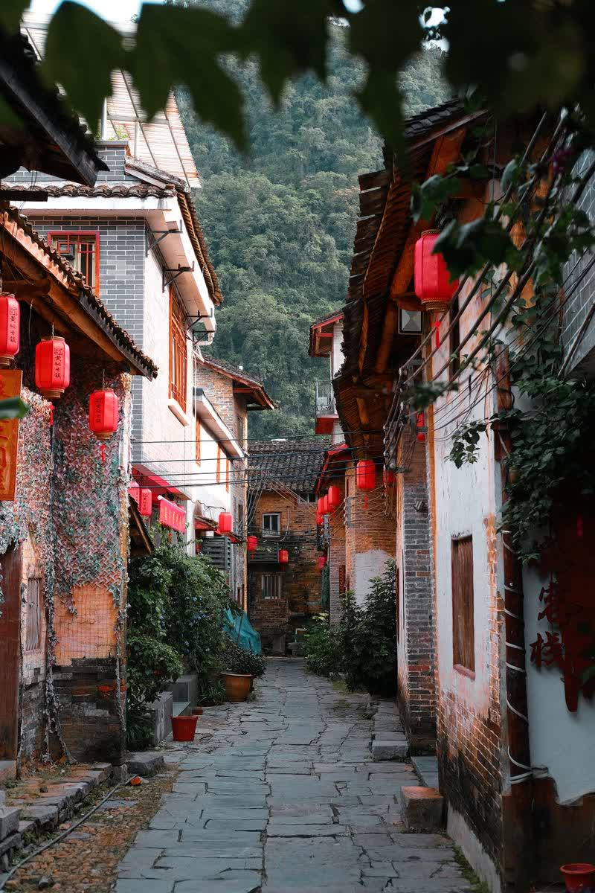
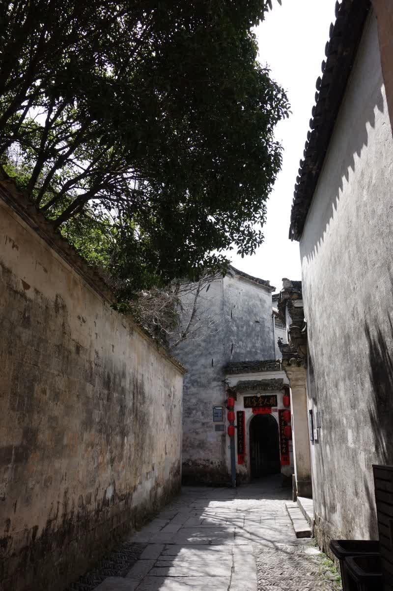
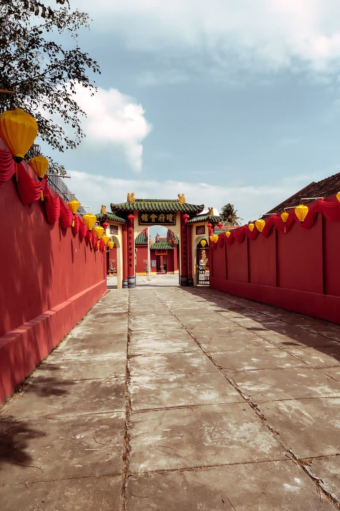
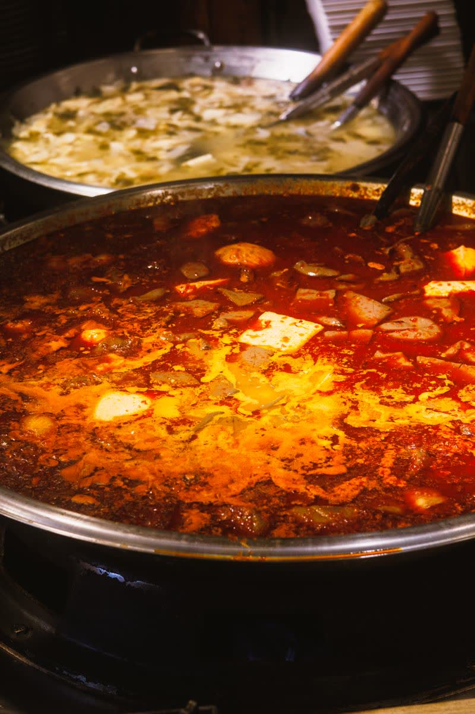
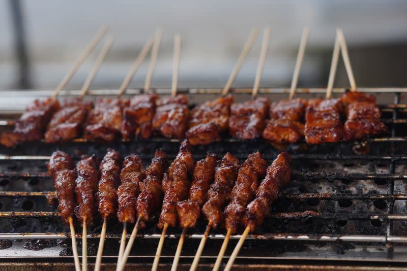
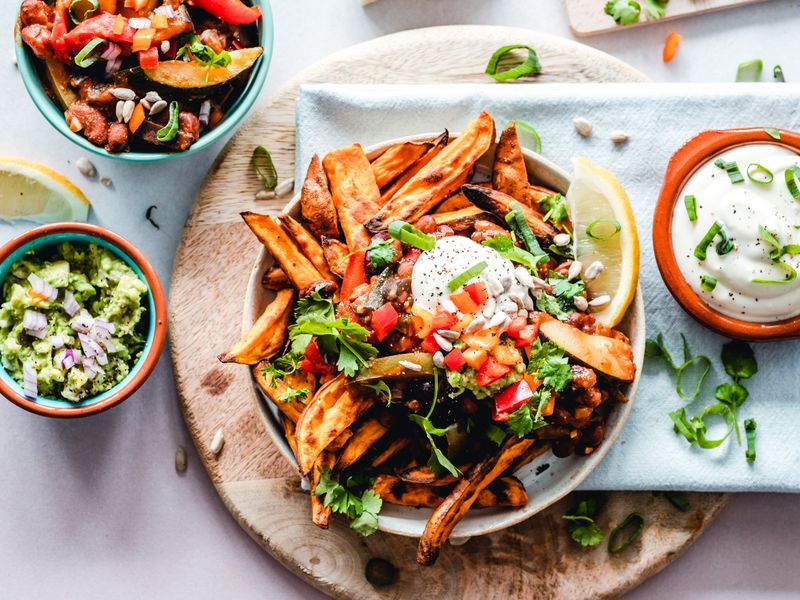
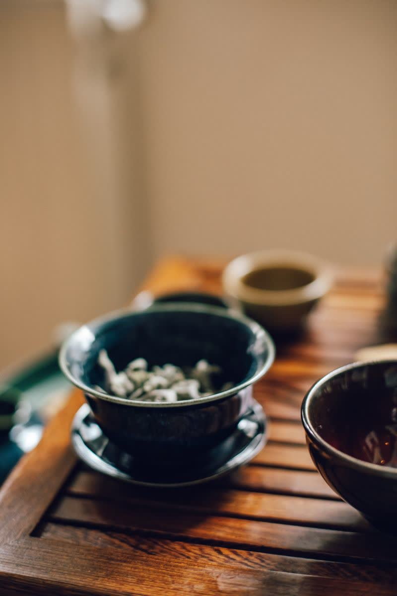

🌳 人民公园
喝盖碗茶，晒下午茶
成都人最爱的"户外客厅"，竹椅、盖碗、耳朵刮风，时间在这里变得格外漫长。
📍 青羊区 · 免费入园公园里的盖碗茶、巷子口的炭火串串、夜市里的霓虹灯笼——
这些不在导游词里的瞬间，才是成都最活色生香的样子。

成都人最爱的"户外客厅"，竹椅、盖碗、耳朵刮风，时间在这里变得格外漫长。
📍 青羊区 · 免费入园霓虹灯下的串串香、冰镇啤酒与成都夜生活，烟火气在这里最浓郁。
📍 青羊区 · 夜晚更热闹
成都的商业心脏，购物、美食、街头表演，年轻活力在这里碰撞。
📍 锦江区 · 全天适宜
武侯祠旁的古街夜景，灯笼串起千年蜀风，手信小吃一条街。
📍 武侯区 · 夜景最美
宽的巷子喝茶、窄的巷子吃小吃，井的巷子则安静适合发呆。
📍 青羊区 · 适合漫步
锦里外的文化地标，古柏掩映下的祠堂，历史感与市井气共存。
📍 武侯区 · 需门票局长用爪印标好了 10 个必逛点，点一点地图上的小标记，就能翻开普通大熊猫的私藏笔记。
🐾 局长小贴士：地铁 3 号线直达熊猫基地；景区直通车可把上面的小红点挨个串起来，蜀道从此不难～
点一下卡片翻个面，背面是局长的干饭攻略；辣度已用小辣椒标好，量力而行哦。

HOT POT · 毛肚七上八下
翻面看攻略 ↻人均 ¥90-120
再翻回来 ↺
SKEWERS · 签签快乐
翻面看攻略 ↻人均 ¥40-60
再翻回来 ↺
BO BO CHICKEN · 冷吃开胃
翻面看攻略 ↻人均 ¥30-45
再翻回来 ↺RABBIT HEAD · 胆量挑战
翻面看攻略 ↻人均 ¥12-15 / 个
再翻回来 ↺
GAIWAN TEA · 慢生活
翻面看攻略 ↻人均 ¥15-30
再翻回来 ↺30 多秒的成都小片：城市夜景、滚滚打盹、灯笼巷子和街头烟火，配上轻快的中文小调，一口气看完成都的可爱。
素材来自 Mixkit 免费视频/配乐 · 默认静音播放，点右下角 🔇 开声音 · 点击画面播放 / 暂停